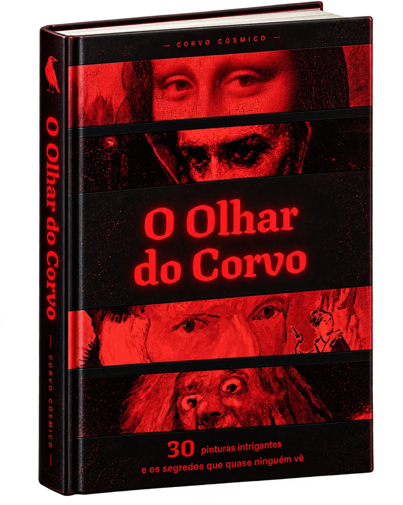
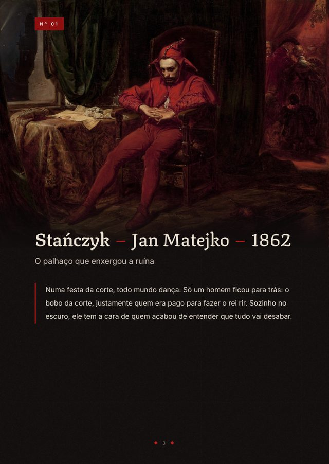
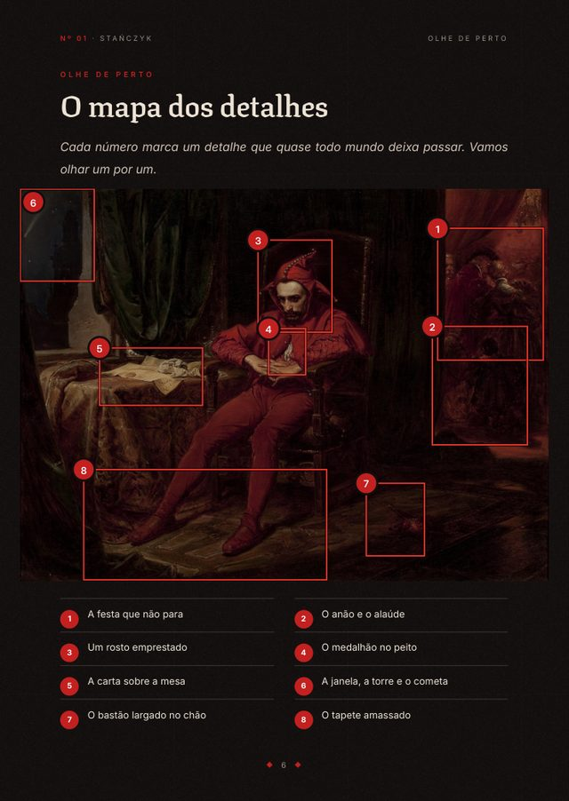
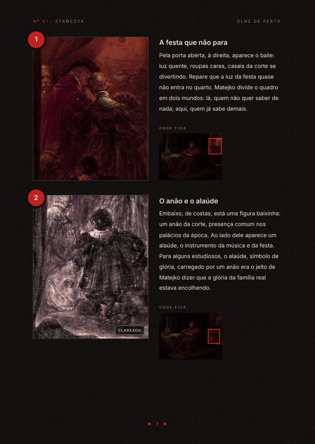
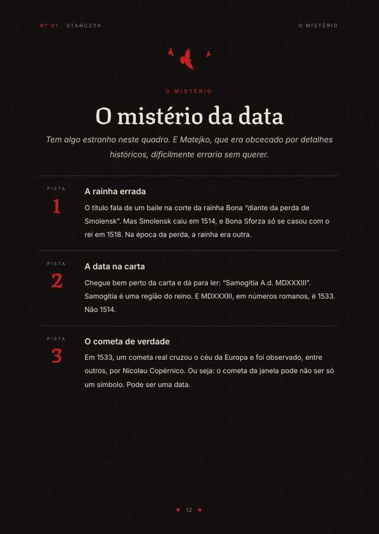

Experimente
Chegue mais perto.
Toque nos números. É assim que o livro mostra cada obra: um detalhe de cada vez, com o zoom e a explicação do que está ali.
30 obras explicadas sem palavras difíceis: a história por trás de cada uma e os detalhes que passam batido, apontados um por um.

Toque nos números. É assim que o livro mostra cada obra: um detalhe de cada vez, com o zoom e a explicação do que está ali.
A história por trás, o mapa dos detalhes, o zoom em cada um e, no fim, o mistério que a pintura ainda guarda. Uns dez minutos de leitura por obra.




De Leonardo a Van Gogh, de Bosch a Klimt. Todas famosas, todas com algo a esconder.
Não. O livro foi escrito para quem nunca estudou arte. Quando aparece uma palavra técnica, ela é explicada na mesma frase.
A compra é feita pela Kiwify. Assim que o pagamento é aprovado, você recebe o acesso ao PDF no seu e-mail.
Sim. É um PDF que abre no celular, no tablet e no computador. O sumário é clicável: toque no nome da obra e vá direto para ela.
Cada obra foi pesquisada em museus, catálogos e estudos sobre o artista, e as fontes estão no fim de cada capítulo. Quando algo é interpretação e não fato, o texto avisa.
30 obras, 372 páginas e 212 detalhes que quase ninguém percebe. Pagamento único, e o e-book é seu para sempre.